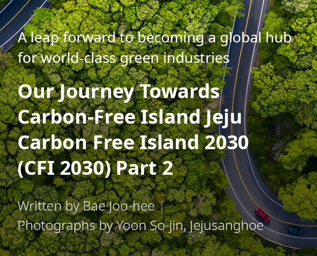

기획취재콘텐츠
- Home
- 제주라이프
- 기획취재콘텐츠
CFI 2030(Carbon Free Island 2030) Part 2새로운 글



Designated as a regulation-free special zone, EV Leading City Jeju receives a boost
- An EV at a charging station ⓒYoon So-jin, Jejusanghoe -
Electric vehicles were first introduced to Jeju Island in 2011 when the Ministry of Environment designated Seoul, Yeonggwang (South Jeolla Province), and Jeju as EV Leading Cities. The provincial government announced the “CFI 2030” initiative in 2012 and the “Mid- and Long-term Plan for Expanding EV Penetration and Nurturing Industries” in 2015. As a result, the number of EVs registered in Jeju increased to 18,178 cars, 20.2% of all EVs in Korea (89,918 cars). Furthermore, the ratio of EVs to all vehicles registered in Jeju Island amounts to 4.69%, more than ten times the national average of 0.38% (as of late December 2019).

※ Source: Data on EV Leading City Jeju, Jeju Special Self-Governing Province (2013-2019)Status of Registered Vehicles in Jeju, Jeju Special Self-Governing Province Transportation Policy Division (2020)

※ Source: Ministry of Land, Infrastructure and Transport (MOLIT) Statistics (as of late December 2019)
Such high penetration of EVs may be attributable to the well-established derivatives ecosystem, including EV charging infrastructure. However, the variety of support programs provided by the island must first be considered.
As of 2020, Jeju Island offers electric vehicle grants of up to KRW 13.2 million for passenger cars or KRW 25 million for trucks. In addition, grants of up to KRW 2 million are offered to EV buyers who scrap their internal combustion engine vehicles or take them out of the island. The island has also taken measures to raise EV penetration, for instance it has developed an exclusive financial product together with banks so that EV buyers can take out loans with lower interest rates, separate from the usual vehicle purchase grants.

※ Source: Ministry of Land, Infrastructure and Transport (MOLIT) Statistics (as of late December 2019)
The solid foundation of an ecosystem of EV-related industries has also contributed to the steady increase in EV penetration. The reason the EV industry has drawn attention lies in the variety of derivative businesses such as charging services, EV maintenance, battery reuse, and EV conversion, among which charging facilities and services have achieved the most remarkable performance. Outside the Seoul Metropolitan Area, Jeju Island boasts the largest number of EV charging businesses in the country. For EV maintenance services, the provincial government and the Ministry of Trade, Industry and Energy are jointly making investments worth KRW 19 billion to facilitate R&D at the Korea Institute of Industrial Technology and to preferentially adopt the resulting maintenance technologies to the island.
Jeju Island hosts the country’s only EV battery industrialization center. Launched in June 2019, Jeju EV Battery Industrialization Center has established a distribution history management system that manages the entire process—from warehousing of retrieved batteries to inspection, rating, and disposal—using blockchain technologies, which has laid the foundation for standardizing battery performance testing. Such efforts are expected to help mitigate environmental degradation resulting from the disposal of used batteries, and identify new industry business opportunities using big data on EV batteries.
- Front view of Jeju EV Battery Industrialization Center, Inside view of Jeju EV Battery Industrialization Center ⓒEnergy Convergence Center, Jeju Technopark -
Meanwhile, Jeju Island has been given the opportunity to further facilitate the various business models of its automobile industry: its designation as a regulation-free special zone for EV charging services in November 2019. This designation is aimed at reducing social costs through deregulation in the field of EV charging services and at identifying new industries. Over a couple of years, fifteen businesses will conduct substantiation projects worth KRW 26.7 billion in four fields: substantiation of advanced charging infrastructure for charging time reduction, substantiation of mobile charging service for charging space minimization, substantiation of a charging infrastructure sharing platform for enhanced utilization, and simplified diagnosis service based on charging data.
As a result of these measures, a variety of regulations regarding EV chargers are likely to be eased and specific business models for sharing or commercializing mobile EV chargers and personal chargers will be made available. Jeju Island has seen the facilitation of R&D for diversifying EV charging facilities, including mobile chargers, the availability of chargers with higher capacity, and a new profit model that allows for the sharing of personal chargers with consignment businesses and their utilization as part of charging infrastructure. Particularly, the charger sharing service is recognized as a profitable platform that can be exported to global markets, which is likely to contribute to the globalization of Jeju’s automobile industry.
- An EV at a charging station ⓒYoon So-jin, Jejusanghoe -